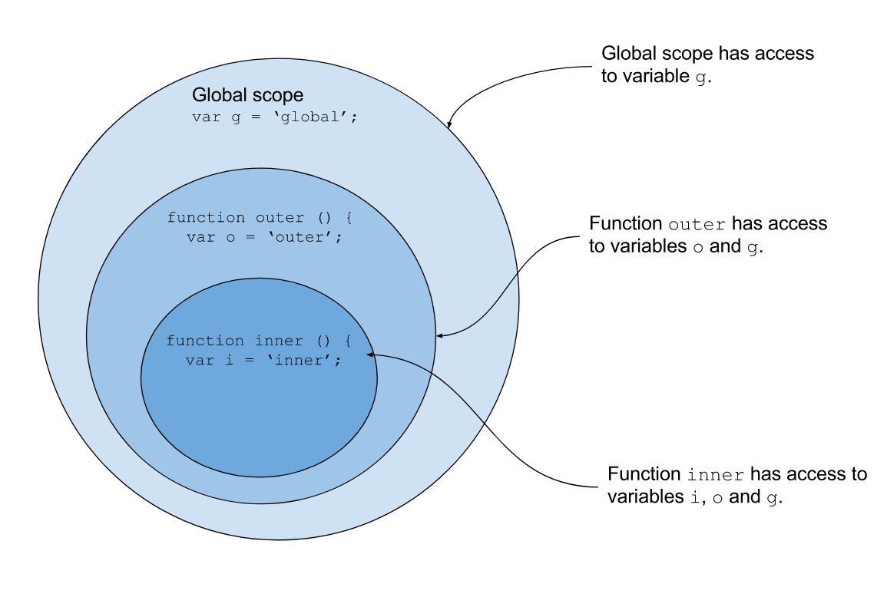

JavaScript Core 7
What we will learn today?
Debugging
Exercise: Group exercise
Going around the room what will the next log be
for (var i = 10; i < 100; i = i + 10) {
if (i > 50) {
console.log("That's big");
} else if (i > 100) {
console.log("Winner winner chicken dinner");
} else {
console.log(i);
}
}
Exercise: Now try it yourself
On your own computers or paper write down the output of the below code section.
After 10 minutes going around the room give the next output
e.g.
i=1 log 1
i=2 log 2
i=3 log Fizz
for (var i = 1; i < 20; i++) {
if (i % 15 == 0) console.log("FizzBuzz");
else if (i % 3 == 0) console.log("Fizz");
else if (i % 5 == 0) console.log("Buzz");
else console.log(i);
}
Demonstration: Chrome dev tools
Open the devToolsExample.html file in this weeks folder in chrome. Add a break point and show stepping over.Exercise: Play with Chrome dev tools
Open the devToolsExample.html on your own computers, add a break point and check the variables.
Objects Revisited
Objects vs Arrays
A data structure is a specialized format for organizing and storing data. General data structure types include the array, the file, the record, the table, the tree, and so on.
We have been dealing mainly with two types of data structures so far - Arrays and Objects.
When we are you solving a problem, one of your main decisions as a developer is to choose the data structures you will use to solve it. So when do you use an Array and when do you use an Object.
"Bad programmers worry about the code. Good programmers worry about data structures and their relationships." Linus Torvalds
Let's talk about the differences between Arrays and Objects - when can you use or the other. As a general rule of thumb:
- Does the order of data matter? Then use Arrays.
- Can the data be organised by a label? Then use Objects.
Exercise: Let's say we're writing a program to model and display a Newspaper: what data structure would you use to model the different sections of the newspaper (sports, politics etc..)? Write a data structure in JavaScript to represent your newspaper
Exercise: Now if we're going to model a Book with different chapters - what data strucuture would we use?
Exercise: Think of a scenario where we might need to combine both?
Object Exercises
Exercise Write a function "printProperties" that takes an object and prints its properties
var student = {
name: "Simon",
age: "21",
interests: ["javascript", "react"]
};
printProperties(student);
// Output in this case should be name, age, interests
Exercise Write a function called hasProperty that takes an object and a property. The function should return true if the property exists, false if it doesn't
var student = {
name: "Simon",
age: "21",
interests: ["javascript", "react"]
};
hasProperty(student, "age"); // should return true
hasProperty(student, "job"); // should return false
Exercise: compare that to how you find an element in array?
Exercise Write a function called ownProperty that takes an object which has a prototype, and a field. The function should return true only if the property exists on the object (and not it's prototype)
var person = {
name: "Simon"
};
var student = {
interests: ["javascript", "react"]
};
student.__proto__ = person; // this is setting the prototype of student to be person
ownProperty(student, "name"); // should return false
ownProperty(student, "interests"); // should return true
Exercise Write a function called printObject that takes an object and iterates through all its properties and prints a string formatted property: value Bonus points if you can format the list of interests properly
var student = {
name: "Simon",
age: "21",
interests: ["javascript", "react"]
};
printObject(student); //output: "name is Simon, age is 21, interests are ["javascript", "react"]
Exercise Write a function called "printArray" that use the previous function "printObject". It should loop through the array of students and print each item
var students = [
{
name: "Etza",
age: "21",
interests: ["javascript", "css"]
},
{
name: "Mohamed",
age: 22,
interests: ["javascript", "c#"]
}
];
printArray(student);
// output:
// "name is Simon, age is 21, interests are ["javascript", "react"]"
// "name is Mohamed, age is 22, interests are ["javascript", "c#"]"
More advanced working with objects
Let's say you have the following object in javascript, where each key/property is the type of note (£5, £10 and £20 note), and the value is the number of notes in the wallet.
var wallet = {
5: 3,
10: 7,
20: 2
};
Exercise Write a function that takes in the wallet as an argument, and returns the total money in the wallet.
Next you're given another wallet, and it's put in an array with the first:
var walletA = {
// our original wallet
5: 3,
10: 7,
20: 2
};
var walletB = {
5: 6,
10: 0,
20: 1
};
var wallets = [walletA, walletB];
Exercises
1 Write a function -
sumWallets- that takes the arraywalletsand returns the total amount of money for all of the wallets.2 Write another function -
combineWallets- that takes the array of wallets and combines all of the notes in each of them, returning a single wallet with all of the other wallets' notes.3 See if you can write a function -
sumDynamicWallet- that will sum up and return the total amount in a single wallet, but it could have any number of different notes inside it (£7 note or a £13 or any other number).4 See if you can write a function that takes in any number of wallets, which could contain any denomination/type of notes inside them (each being different). Tip: have a think about if you could re-use a function from a previous example...
Value vs Reference Types
A variable can hold two types of values: primitives (value types) and reference types. The distinction between them is very important and will be a fundamental addition to your JavaScript arsenal.
Primitives are:
- string (example:
John Doe) - number (example:
100) - boolean (example:
trueorfalse)
Reference types are:
- Objects (example:
{greeting: "hello"}) - Arrays (example:
[1,2,3]) - Functions (example:
function doNothing() { })
Variables can only hold a few bytes of data. Because primitives have fixed sizes, when you assign a primitive to a variable, it will hold the actual value of the primitive (hence the name "value type"). But reference types can have practically infinite sizes, so when you assign a reference type to a variable, that variable will hold a reference to it only: an identifier which will tell our program where to look for that object in memory.
Pass by value / reference
Consider the example below.
function addFive(value) {
value = value + 5;
}
var ten = 10;
addFive(ten);
console.log(ten);
We have a function that accepts a value as an argument. The function then adds five to the
argument and logs the value.
After invoking the function with the variable ten, the variable is logged.
What will be the values logged? Answer: 10 (not 15)
Explanation: In JavaScript, variables are always passed to function by value. That means only the value the variables was holding is passed to the function, and not a reference to the variable's location in memory. That means that inside a function call, any changes we make to its arguments will only apply inside the function (as seen in the previous example).
Be careful though, as the value of an argument might be a reference to a JavaScript object, in which case, changing a property on that object will also reflect everywhere else we use a reference to that object.
For example:
function a(primitive, object) {
primitive = primitive + 5;
object.greeting = "how are you?";
object = {
greeting: "holla!"
};
}
var primitive = 10;
var object = {
greeting: "hello"
};
a(primitive, object);
console.log(primitive); // 10
console.log(object.greeting); // "how are you?"
Let's look at the illustrations here to understand this behavior better
Exercise
- Open up the CodePen here
- Create a new
index.htmlandmain.jsfile- Link the
main.jsfrom theindex.htmlso that it runs in the browser- Copy the exercises from the CodePen above into
main.jsand follow the instructions in the comments
Scope
Before we get into what scope is, let's try a little exercise.
Open up jsbin and write the following:
function () {
var name = "hello";
}
console.log(name);
What do you think the first console.log will print?
var hello = "outer";
function() {
var hello = "inner";
console.log(hello);
}
What do you think calling the function will print?
Let's see another example
var firstFunction = function() {
var a = 10;
var secondFunction = function() {
console.log(a);
};
secondFunction();
};
firstFunction();
This should work fine, and the console should print 10. But what if we swap
the positions of var a and the console.log()?
var firstFunction = function() {
console.log(a);
var secondFunction = function() {
var a = 10;
};
secondFunction();
};
firstFunction();
This returns an error: ReferenceError: a is not defined. You might think that
the problem is that we're trying to console log a before it's declared in the
code order. So let's try putting the console.log(a) after secondFunction,
where a is assigned:
var firstFunction = function() {
var secondFunction = function() {
var a = 10;
};
console.log(a);
secondFunction();
};
firstFunction();
Wait, we're still getting the ReferenceError! Even if we move the
console.log(a) underneath where secondFunction is called, we still get the
error. What's going on?
What we're seeing here is the effect of scope. Take a look at the following diagram:

We can see from this picture that each function is like a 'bubble', and it has
access to the variable assigned within it, and the variables assigned 'above'
it, in it's surrounding function. But note that the 'global' scope doesn't have
access to var o, and function outer() doesn't have access to var i. So
each function can access the variables in its parent scope, and in it's
own, immediate scope, but it cannot see the variables in its child
scope.
If a variable is declared outside of a function, in the 'window', it has 'global' scope. The scope within a function is 'local' scope:
var test = "I'm global";
function testScope() {
var test = "I'm local";
console.log(test);
}
testScope(); // output: I'm local
console.log(test); // output: I'm global
Exercise
- Continue working on your
main.jsfrom your previous exercises- Copy the exercises from this CodePen
- Remember to comment/uncomment each set once you're done with them
Resources
Homework
- Create an account on CodeWars and do at least 15 challenges.
- Sign up for the JavaScript 30 course and do at least 2 project. You can find the starter files for the project here